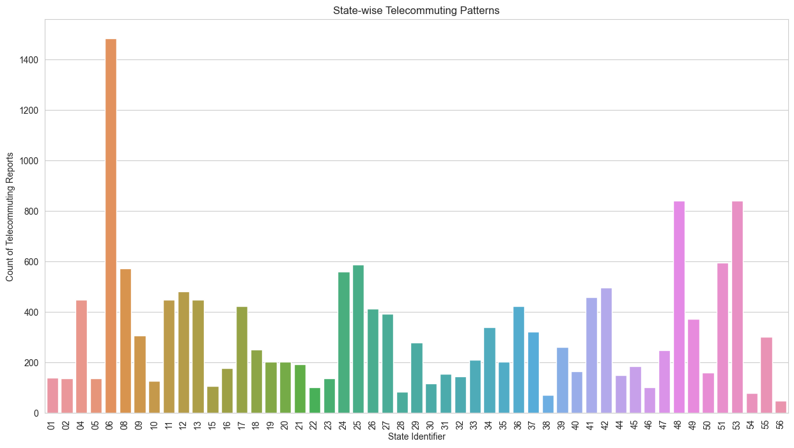
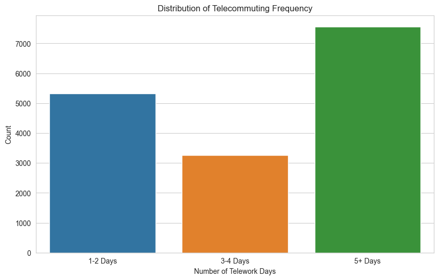
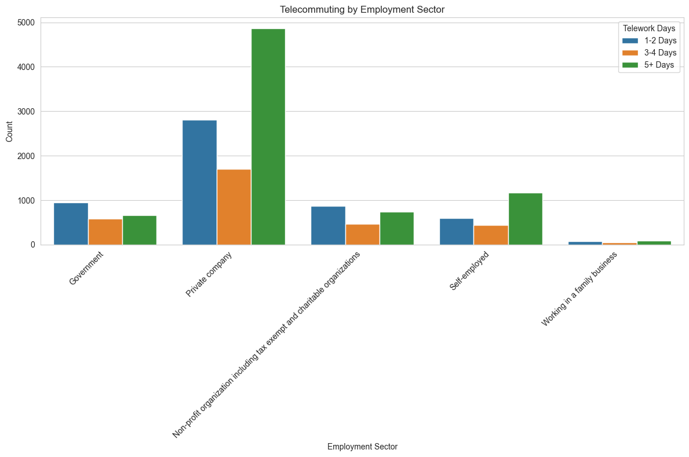
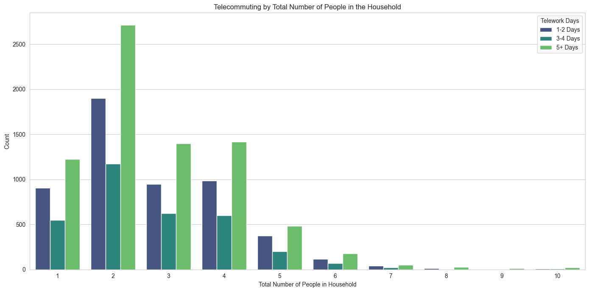

| SCRAM | CYCLE | EST_ST | EST_MSA | REGION | HWEIGHT | PWEIGHT | TBIRTH_YEAR | ABIRTH_YEAR | RHISPANIC | AHISPANIC | RRACE | ARACE | EEDUC | AEDUC | MS | EGENID_BIRTH | AGENID_BIRTH | GENID_DESCRIBE | SEXUAL_ORIENTATION | THHLD_NUMPER | AHHLD_NUMPER | THHLD_NUMKID | AHHLD_NUMKID | THHLD_NUMADLT | KIDS_LT5Y | KIDS_5_11Y | KIDS_12_17Y | ENRPUBCHK | ENRPRVCHK | ENRHMSCHK | TENROLLPUB | TENROLLPRV | TENROLLHMSCH | ENROLLNONE | ACTVDUTY1 | ACTVDUTY2 | ACTVDUTY3 | ACTVDUTY4 | ACTVDUTY5 | RECVDVACC | HADCOVIDRV | SYMPTOMS | LONGCOVID | SYMPTMNOW | WRKLOSSRV | ANYWORK | KINDWORK | RSNNOWRKRV | EXPNS_DIF | TWDAYS | CURFOODSUF | CHILDFOOD | FOODRSNRV1 | FOODRSNRV2 | FOODRSNRV3 | FOODRSNRV4 | FREEFOOD | SCHLFDHLP_RV1 | SCHLFDHLP_RV2 | SCHLFDHLP_RV3 | SCHLFDHLP_RV4 | SCHLFDHLP_RV5 | FDBENEFIT1 | ANXIOUS | WORRY | INTEREST | DOWN | HLTHINS1 | HLTHINS2 | HLTHINS3 | HLTHINS4 | HLTHINS5 | HLTHINS6 | HLTHINS7 | HLTHINS8 | PRIVHLTH | PUBHLTH | SEEING | HEARING | REMEMBERING | MOBILITY | SELFCARE | UNDERSTAND | TENURE | RENTCHNG | LIVQTRRV | RENTCUR | MORTCUR | TMNTHSBHND | EVICT | FORCLOSE | ENERGY | HSE_TEMP | ENRGY_BILL | INCOME | SYMPTMIMPCT | PRICECHNG | PRICESTRESS | PRICECONCRN | TWDAYS_RESP | FRMLA_YN | FRMLA_AGE | FRMLA_DIFFCLT | GAS1 | GAS2 | GAS3 | GAS4 | SCHLFDHLP_RV6 | SCHLFDHLP_RV7 | SCHLFDHLP_RV8 | FDBENEFIT2 | SCHLFDEXPNS | ND_DISPLACE | ND_TYPE1 | ND_TYPE2 | ND_TYPE3 | ND_TYPE4 | ND_TYPE5 | ND_HOWLONG | ND_DAMAGE | ND_FDSHRTAGE | ND_WATER | ND_ELCTRC | ND_UNSANITARY | ND_ISOLATE | ND_CRIME | ND_SCAM | FDBENEFIT3 | BABY_FED | MHLTH_NEED | MHLTH_GET | MHLTH_SATISFD | MHLTH_DIFFCLT | MOVEWHY1 | MOVEWHY2 | MOVEWHY3 | MOVEWHY4 | MOVEWHY5 | MOVEWHY6 | MOVEWHY7 | MOVEWHY8 | MOVED | WHENCOVIDRV1 | WHENCOVIDRV2 | WHENCOVIDRV3 | VETERAN1 | VETERAN2 | VETERAN3 | VETERAN4 | VETERAN5 | CHILDCARE | CHILDCARE_RSLT1 | CHILDCARE_RSLT2 | CHILDCARE_RSLT3 | CHILDCARE_RSLT4 | CHILDCARE_RSLT5 | CHILDCARE_RSLT6 | CHILDCARE_RSLT7 | CHILDCARE_RSLT8 | CHILDCARE_RSLT9 | SOCIAL1 | SOCIAL2 | SUPPORT1 | SUPPORT2 | SUPPORT3 | SUPPORT4 | SUPPORT1EXP | RVACCDATE | RSVVACC | |
|---|---|---|---|---|---|---|---|---|---|---|---|---|---|---|---|---|---|---|---|---|---|---|---|---|---|---|---|---|---|---|---|---|---|---|---|---|---|---|---|---|---|---|---|---|---|---|---|---|---|---|---|---|---|---|---|---|---|---|---|---|---|---|---|---|---|---|---|---|---|---|---|---|---|---|---|---|---|---|---|---|---|---|---|---|---|---|---|---|---|---|---|---|---|---|---|---|---|---|---|---|---|---|---|---|---|---|---|---|---|---|---|---|---|---|---|---|---|---|---|---|---|---|---|---|---|---|---|---|---|---|---|---|---|---|---|---|---|---|---|---|---|---|---|---|---|---|---|---|---|---|---|---|---|---|---|---|---|---|---|---|---|---|---|---|---|---|---|---|---|---|
| 0 | P020000001 | 2 | 32 | NaN | 4 | 704.966315 | 2067.690868 | 1976 | 1 | 1 | 2 | 2 | 2 | 6 | 2 | 4 | 2 | 2 | 2 | 2 | 3 | 2 | 0 | 2 | 3 | -88 | -88 | -88 | -88 | -88 | -88 | -88 | -88 | -88 | -88 | -99 | -99 | -99 | -99 | -99 | 1 | -99 | -88 | -88 | -88 | -99 | -99 | -88 | -88 | 1 | -99 | 2 | -88 | -99 | 1 | 1 | -99 | 2 | -88 | -88 | -88 | -88 | -88 | 1 | 4 | 4 | 4 | 4 | -99 | -99 | -99 | 1 | -99 | -99 | -99 | -99 | 3 | 1 | 3 | 1 | 3 | 2 | 3 | 1 | 3 | 2 | 6 | 1 | -88 | -88 | -88 | -88 | 2 | 2 | 3 | 2 | -88 | 4 | -88 | 2 | -88 | -88 | -88 | -88 | -99 | -99 | -99 | -99 | -88 | -88 | -88 | -99 | -88 | -99 | -88 | -88 | -88 | -88 | -88 | -88 | -88 | -88 | -88 | -88 | -88 | -88 | -88 | -88 | -99 | -88 | -88 | -88 | -88 | -88 | -99 | -99 | -99 | -99 | -99 | 1 | -99 | -99 | 1 | -88 | -88 | -88 | -88 | -88 | -88 | -88 | -88 | -88 | -88 | -88 | -88 | -88 | -88 | -88 | -88 | -88 | -88 | 5 | 3 | 2 | 1 | 4 | 1 | 2 | -99 | -88 |
| 1 | P020000002 | 2 | 53 | NaN | 4 | 716.582115 | 1359.474802 | 1961 | 2 | 1 | 2 | 1 | 2 | 5 | 2 | 3 | 2 | 2 | -88 | 2 | 2 | 2 | 0 | 2 | 2 | -88 | -88 | -88 | -88 | -88 | -88 | -88 | -88 | -88 | -88 | 1 | -99 | -99 | -99 | -99 | -99 | -99 | -88 | -88 | -88 | -99 | -99 | -88 | -88 | -99 | 4 | -99 | -88 | -88 | -88 | -88 | -88 | -99 | -88 | -88 | -88 | -88 | -88 | -99 | -99 | -99 | -99 | -99 | -99 | -99 | -99 | -99 | -99 | -99 | -99 | -99 | 3 | 3 | -99 | -99 | -99 | -99 | -99 | -99 | -99 | -88 | -99 | -88 | -88 | -88 | -88 | -88 | -99 | -99 | -99 | -99 | -88 | -99 | -88 | -99 | -88 | -88 | -88 | -88 | -99 | -99 | -99 | -99 | -88 | -88 | -88 | -99 | -88 | -99 | -88 | -88 | -88 | -88 | -88 | -88 | -88 | -88 | -88 | -88 | -88 | -88 | -88 | -88 | -99 | -88 | -88 | -88 | -88 | -88 | -88 | -88 | -88 | -88 | -88 | -88 | -88 | -88 | -88 | -88 | -88 | -88 | -99 | -99 | -99 | -99 | -99 | -88 | -88 | -88 | -88 | -88 | -88 | -88 | -88 | -88 | -88 | -99 | -99 | -99 | -99 | -99 | -99 | -99 | -88 | -99 |
| 2 | P020000003 | 2 | 6 | 31080.0 | 4 | 2439.529962 | 4554.378984 | 1988 | 2 | 1 | 2 | 1 | 2 | 7 | 2 | 1 | 2 | 2 | 2 | 3 | 2 | 2 | 0 | 2 | 2 | -88 | -88 | -88 | -88 | -88 | -88 | -88 | -88 | -88 | -88 | 1 | -99 | -99 | -99 | -99 | 1 | 1 | 3 | 2 | 2 | 2 | 1 | 1 | -88 | 1 | 1 | 1 | -88 | -88 | -88 | -88 | -88 | 2 | -88 | -88 | -88 | -88 | -88 | -99 | 2 | 2 | 2 | 2 | 1 | 2 | 2 | 2 | 2 | 1 | 2 | 2 | 1 | 1 | 1 | 1 | 1 | 1 | 1 | 1 | 2 | -88 | 2 | -88 | 1 | -88 | -88 | -88 | 4 | 4 | 4 | 7 | -88 | 4 | -88 | 4 | 1 | -88 | -88 | -88 | -99 | -99 | -99 | 1 | -88 | -88 | -88 | -99 | -88 | 2 | -88 | -88 | -88 | -88 | -88 | -88 | -88 | -88 | -88 | -88 | -88 | -88 | -88 | -88 | 1 | -88 | -88 | -88 | -88 | -88 | -88 | -88 | -88 | -88 | -88 | -88 | -88 | -88 | -88 | -99 | -99 | 1 | -99 | 1 | -99 | 1 | -99 | -88 | -88 | -88 | -88 | -88 | -88 | -88 | -88 | -88 | -88 | 1 | 4 | 2 | 2 | 1 | 1 | 4 | 1 | -88 |
| 3 | P020000004 | 2 | 48 | NaN | 2 | 3945.461037 | 7550.581707 | 1956 | 2 | 1 | 2 | 1 | 2 | 5 | 2 | 1 | 1 | 2 | -88 | 2 | 2 | 2 | 0 | 2 | 2 | -88 | -88 | -88 | -88 | -88 | -88 | -88 | -88 | -88 | -88 | 1 | -99 | -99 | -99 | -99 | 1 | 2 | -88 | -88 | -88 | 2 | 1 | -99 | -88 | 2 | 4 | 2 | -88 | 1 | -99 | -99 | -99 | 2 | -88 | -88 | -88 | -88 | -88 | -99 | 1 | 1 | 1 | 1 | 2 | 2 | 1 | 2 | 2 | 2 | 2 | 2 | 2 | 1 | 2 | 3 | 1 | 1 | 1 | 1 | 2 | -88 | 2 | -88 | 1 | -88 | -88 | -88 | 4 | 4 | 4 | 2 | -88 | 1 | 2 | 1 | -88 | -88 | -88 | -88 | 1 | -99 | -99 | -99 | -88 | -88 | -88 | -99 | -88 | 2 | -88 | -88 | -88 | -88 | -88 | -88 | -88 | -88 | -88 | -88 | -88 | -88 | -88 | -88 | 1 | -88 | -88 | -88 | -88 | -88 | -88 | -88 | -88 | -88 | -88 | -88 | -88 | -88 | -88 | -88 | -88 | -88 | 1 | -99 | -99 | -99 | -99 | -88 | -88 | -88 | -88 | -88 | -88 | -88 | -88 | -88 | -88 | 2 | 5 | 3 | 3 | 4 | 2 | 4 | 1 | 1 |
| 4 | P020000005 | 2 | 53 | 42660.0 | 4 | 489.900163 | 929.421644 | 1970 | 2 | 1 | 2 | 1 | 2 | 6 | 2 | 1 | 1 | 2 | -88 | 2 | 2 | 2 | 0 | 2 | 2 | -88 | -88 | -88 | -88 | -88 | -88 | -88 | -88 | -88 | -88 | 1 | -99 | -99 | -99 | -99 | 1 | 1 | 2 | 2 | 2 | 2 | 1 | 1 | -88 | 1 | 3 | 1 | -88 | -88 | -88 | -88 | -88 | 2 | -88 | -88 | -88 | -88 | -88 | -99 | 1 | 1 | 1 | 1 | 1 | 2 | 2 | 2 | 2 | 2 | 2 | 2 | 1 | 2 | 1 | 1 | 1 | 1 | 1 | 1 | 2 | -88 | 2 | -88 | 1 | -88 | -88 | -88 | 4 | 4 | 4 | 8 | -88 | 1 | 2 | 1 | 4 | -88 | -88 | -88 | -99 | -99 | -99 | 1 | -88 | -88 | -88 | -99 | -88 | 2 | -88 | -88 | -88 | -88 | -88 | -88 | -88 | -88 | -88 | -88 | -88 | -88 | -88 | -88 | 1 | -88 | -88 | -88 | -88 | -88 | -88 | -88 | -88 | -88 | -88 | -88 | -88 | -88 | -88 | -99 | -99 | 1 | 1 | -99 | -99 | -99 | -99 | -88 | -88 | -88 | -88 | -88 | -88 | -88 | -88 | -88 | -88 | 2 | 5 | 2 | 1 | 1 | 1 | 4 | 2 | -88 |
First few rows of dataframe
EST_ST distribution
EST_ST
06 1485
53 842
48 841
51 596
25 587
08 572
24 561
42 496
12 482
41 459
11 449
13 449
04 448
17 424
36 423
26 413
27 392
49 373
34 340
37 323
09 306
55 303
29 278
39 261
18 250
47 248
33 210
19 203
35 202
20 202
21 192
45 185
16 177
40 164
50 160
31 155
44 150
32 145
01 140
02 138
23 138
05 137
10 128
30 118
15 107
22 103
46 101
28 83
54 80
38 71
56 49
Name: count, dtype: int64EST_MSA distribution
EST_MSA
47900.0 1125
42660.0 628
41860.0 586
35620.0 537
14460.0 522
37980.0 441
31080.0 404
16980.0 388
19100.0 386
12060.0 370
38060.0 350
26420.0 256
19820.0 234
33100.0 194
40140.0 176
Name: count, dtype: int64State-Wise Telecommuting Patterns

City-Wise Telecommuting Patterns

Telecommuting Frequency Distributions

Telecommuting by Educational Attainment

Telecommuting by Employment Sector

Telecommuting by Number of People in the Household

Telecommuting by presence of Children in the Household